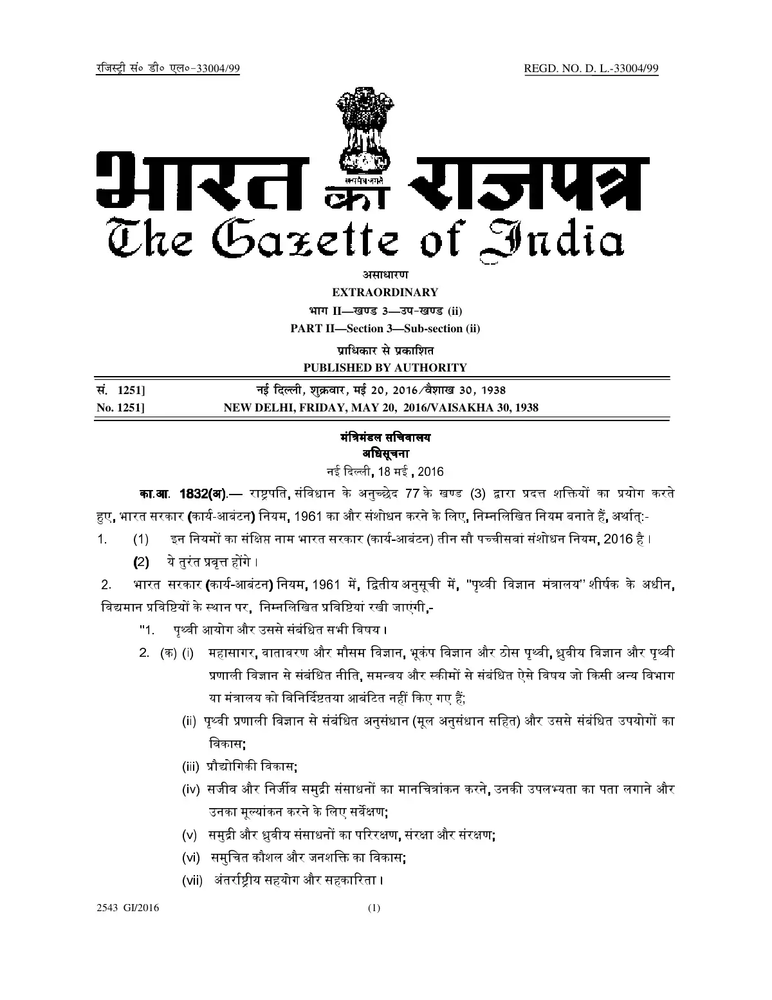
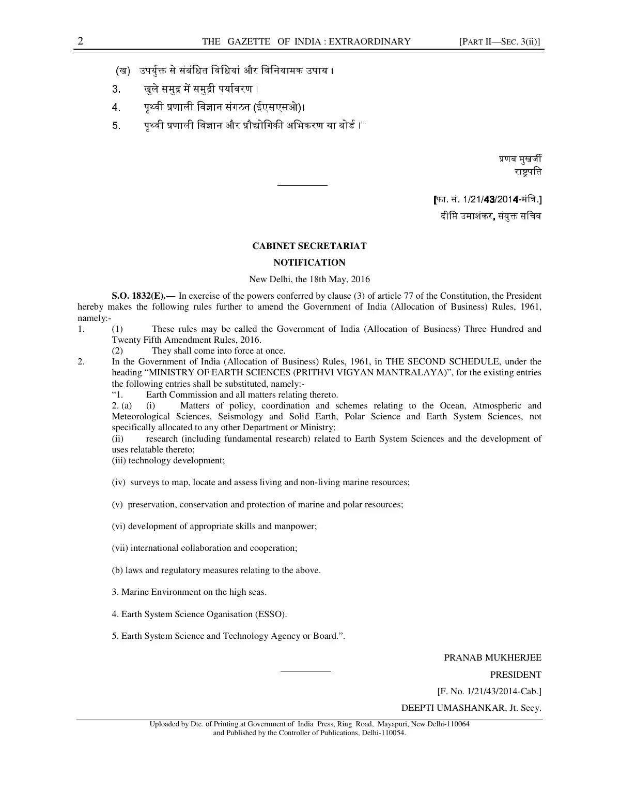

Amendment #325 (S.O. 1832(E), 2016)
1 change: 0 to the First Schedule, 1 to the Second Schedule. 1 applied
What it did to the ministries
- shrankMinistry of Earth Sciences shrinks from 12 to 5 subjects change 1 · histories: Earth Sciences
The order, page by page
Page 1 of 2

Page 2 of 2

1Schedule 2 › MINISTRY OF EARTH SCIENCES
- 1. Earth Commission and all matters relating thereto.
- 2.
- a. (i) Matters of policy, coordination and schemes relating to the Ocean, Atmospheric and Meteorological Sciences, Seismology and Solid Earth, Polar Science and Earth System Sciences, not specifically allocated to any other Department or Ministry
- ii. research (including fundamental research) related to Earth System Sciences and the development of uses relatable thereto
- iii. technology development
- iv. surveys to map, locate and assess living and non-living marine resources
and 7 more
- v. preservation, conservation and protection of marine and polar resources
- vi. development of appropriate skills and manpower
- vii. international collaboration and cooperation
- b. laws and regulatory measures relating to the above.
- 3. Marine Environment on the high seas.
- 4. Earth System Science Oganisation (ESSO).
- 5. Earth System Science and Technology Agency or Board.
applied at schedule 2 › ministry MINISTRY OF EARTH SCIENCES in the Rules after #325
How this document was read
From the Government of India (Allocation of Business) Rules, 1961 and their amendments, as published by the Cabinet Secretariat (cabsec.gov.in), read by orgpedia. The readings of the older scanned gazettes have known gaps.